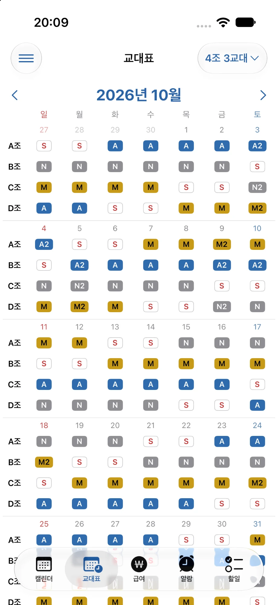
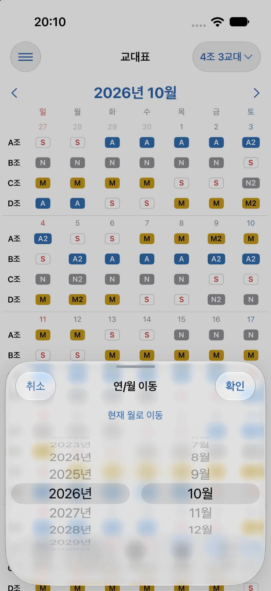
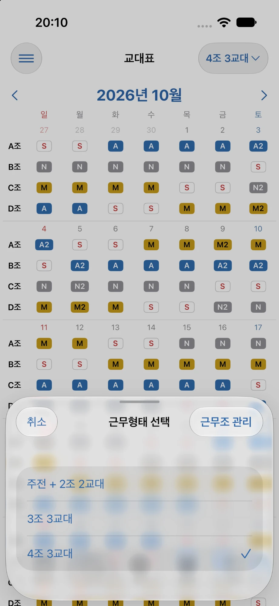
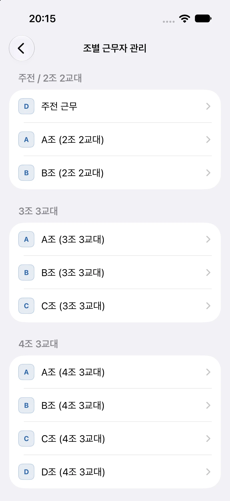
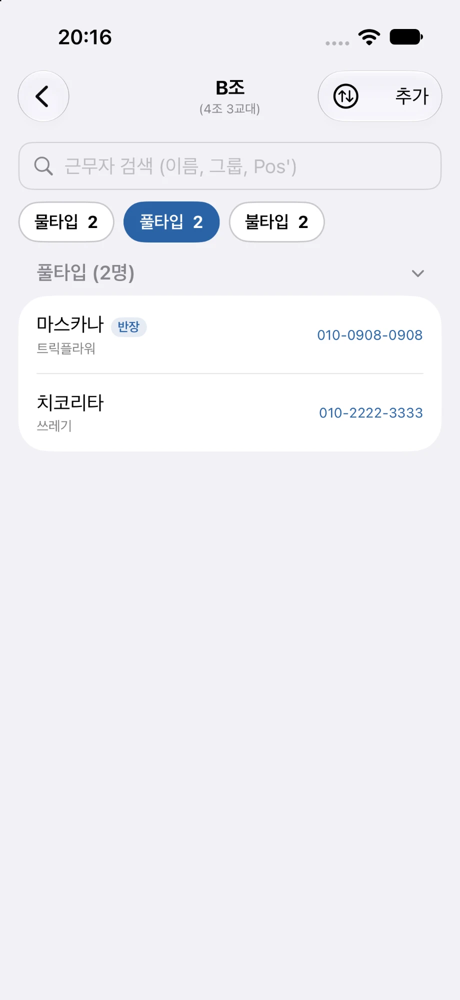
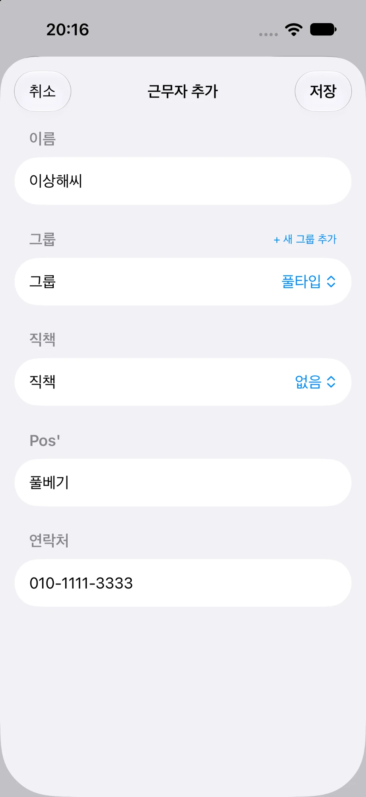
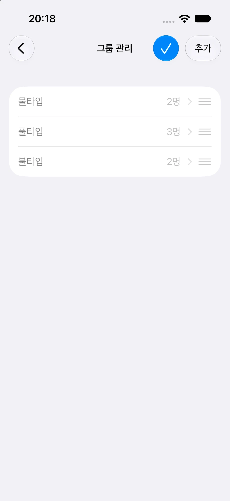

교대표 화면 알아보기
-
1 / 3
교대표를 한눈에 확인합니다
교대표에서는 선택한 근무형태의 각 조가 날짜별로 어떤 근무를 하는지 함께 확인할 수 있습니다.
조 이름을 선택하면 해당 조의 근무자 관리 화면으로 바로 이동할 수 있어, 일정 확인 중에도 근무자 정보를 빠르게 확인하거나 수정할 수 있습니다.

-
2 / 3
원하는 연·월로 이동합니다
화면 상단의 연도와 월을 선택하면 확인하려는 달로 바로 이동할 수 있습니다.
여러 달을 차례로 넘기지 않아도 과거 또는 앞으로의 교대표를 빠르게 확인할 수 있습니다.

-
3 / 3
다른 근무형태의 교대표를 확인합니다
오른쪽 위의 근무형태 선택 버튼을 이용하면 현재 보고 있는 근무형태와 다른 교대표를 확인할 수 있습니다.
‘주전 + 2조 2교대’, ‘3조 3교대’, ‘4조 3교대’ 중에서 선택할 수 있습니다.

조별 근무자 관리
-
1 / 3
근무형태와 조별로 근무자를 관리합니다
교대표에서는 근무형태와 근무조별로 함께 근무하는 사람을 따로 관리할 수 있습니다.
서로 다른 근무형태나 조의 근무자가 섞이지 않도록 구분해 확인할 수 있습니다.

-
2 / 3
근무자를 검색하고 필터링합니다
검색창에서 이름, 그룹, Pos'로 필요한 근무자를 빠르게 찾을 수 있습니다.
화면 상단의 그룹 필터에서 전체, 각 그룹, 미지정 중 하나를 선택하면 해당 그룹의 근무자만 골라서 확인할 수 있습니다.

-
3 / 3
새로운 근무자를 추가합니다
근무자 추가 기능을 이용해 선택한 근무형태와 조에 함께 근무하는 사람을 등록할 수 있습니다.
이름과 그룹, 직책, Pos', 연락처를 입력할 수 있으며, 저장한 연락처로 바로 전화나 메시지를 보낼 수 있습니다.

그룹 관리
-
1 / 2
필요한 그룹을 만들어 관리합니다
자주 함께 확인하는 근무자를 그룹으로 나누어 관리할 수 있습니다.
필요한 그룹을 추가한 뒤 근무자를 분류하면 많은 인원이 있어도 원하는 사람을 빠르게 찾을 수 있습니다. 만든 그룹은 모든 근무형태와 조의 근무자 분류에 공통으로 사용할 수 있습니다.
-
2 / 2
그룹의 표시 순서를 변경합니다
그룹 관리 화면에서 ‘편집’ 버튼을 누른 뒤 각 그룹 오른쪽의 ≡ 표시를 끌어 순서를 바꾸고, 체크 버튼을 눌러 마칩니다.
자주 사용하는 그룹을 위쪽으로 옮겨 원하는 순서로 정리할 수 있습니다.
